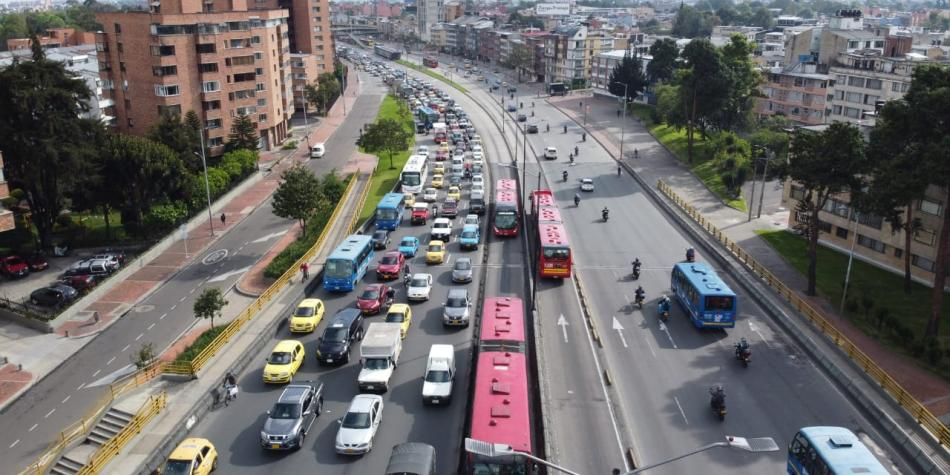

|
|
|
|  |
El 25 de mayo inicia cobro de multas vía cámaras salvavidas en Bogotá ADN- Domingo 10 de mayo del 2020 |
El Secretario de Movilidad de Bogotá, Nicolás Estupiñán, anunció que el lunes 25 de mayo comienza a funcionar en firme el sistema de cámaras salvavidas en Bogotá.
Estarán ubicadas en 92 puntos y serán en total 72 cámaras que detectarán las siguientes infracciones vía foto detecció
- Exceso de velocidad (que acarrearía una multa de 438.000 pesos).
- No reducir la velocidad en zonas escolares
- Pasarse el semáforo en rojo.
- Circular durante la restricción de pico y placa.
- Incumplimiento con la revisión técnico-mecánica y Soat.
El proceso pedagógico finalizará el 24 de mayo, por lo que la Secretaría de Movilidad entrará con el cobro de multas económicas el 25 de mayo.
Temas relacionados
MOTELES
03:35 P.M.
Tatequieto a los moteles por incumplir la cuarentena
PARAMILITARES
01:03 P.M.
Avanza recuperación de predio invadido en Altos de la Estancia
EDUCACIÓN BOGOTÁ
11:59 A.M.
Lista misión de sabios que marcará la hoja de ruta de la educación
Las cámaras ya funcionan desde el año pasado, informando de infracciones detectadas. Entre el 10 de diciembre y el 7 de mayo se enviaron 28.794 avisos.
"La corte en ningún momento ha dicho que el proceso de foto detección no es válido", advirtió Estupiñán ante el lío jurídico que complicó el proceso hace unos meses.
El Ministerio de Transporte ya revisó los puntos donde estarán dispuestas las cámaras, cómo es la señalización y supervisan la calibración.
Este sistema de multas es complementario a la vigilancia en vía hecha por Policía de Tránsito. Para el funcionamiento de esta herramienta tecnológica se han invertido cerca de 40 mil millones de pesos.
El objetivo es reducir la siniestralidad vial.
10 claves para usar la bicicleta en tiempos de coronavirus
Así se preparan las ciudades para subirse a la bicicleta
Alcaldía permitirá alquiler de bicis y patinetas por la cuarentena
¿Cómo funciona?
1. Las cámaras graban de manera continua durante las 24 horas del día y generan evidencias de las presuntas infracciones (y, en todo caso, verifica si el vehículo, por alguna razón , está exceptuado de alguna de las restricciones, como el pico y placa).
2. Policía de Tránsito verifica las evidencias y, si la prueba es válida, impone el comparendo.
3. En los tres días siguientes a la validación de la infracción, se enviará el comparendo a la dirección registrada den el RUNT. Por lo que es clave que los datos estén actualizados.
4. El pago de la multa se podrá hacer en los 11 días hábiles contados a partir de la notificación de la multa. Se puede acceder a un 50 % de descuento si se hace un curso pedagógico.
Tenga en cuenta: Por la suspensión de términos procesales, decretada con la cuarentena que va hasta el 25 de mayo, cualquier proceso de impugnación solo podrá ser hecho después del 25 de mayo.